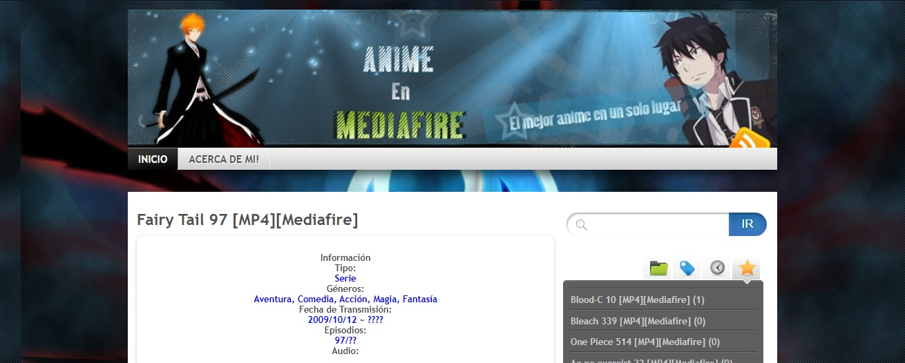

<div class="row">
    <h1>Proyectos Realizados</h1>
    <div class="container">
        <div class="col-sm-12 col-md-7 col-lg-7 parte1">
            <h3>Anime En Mediafire</h3>
            <p class="lead">Fue un blog que hice basandome en el CMS Wordpress en el año 2011.</p>
        </div>
        <div class= "col-sm-12 col-md-3 col-lg-3 offset-md-1 offset-lg-1 parte2">
            <a href="https://animenmediafire.wordpress.com"></a>
        </div>
    </div>
</div>
